المحاضرة رقم 1
عرفت البشرية التعامل بالنقود في فتره مبكره في بلاد مختلفة وكانت الوسائل البديلة هي عمله المقايضة , حتى ظهرت النقود المتعارف عليها بأنواع مختلفة من النقود والعملات المعدنية أو فيما عرف هذا النوع من العملات والمسكوكات ويندرج هذا العلم في مادة ضمن علم أوروبي مسمى علم التميمات الذي كان يضم العديد من الوسائل المختلفة في التعاملات منها صند الوزن، الأنماط ، الاوسمة ، الصنج الزجاجية ، الصنج المعدنية ، ثم بعد ذلك النقود
- في بداية القرن التاسع عشر عرف الأوروبيون التعامل بالعملة الورقية التي عرفت فيما بعد باسم البنك نود وبناءا علي ذلك تم تداول النقود وعرفت في بقاع كثيرة من العالم وانتشرت من دولة إلى أخرى وانتقلت من مكان الي اخر وتم تداولها باشكال وانواع مختلفه .
وهناك تمييز من النقود المتداولة في التعامل التجاري بين الناس وبين
الدول والنقود التذكارية التي كانت تضرب او سمع او تسك من أجل تخليد
ذكري أو مناسبات معينة وتختلف من مكان الى آخر .
- والنقود المتداولة قبل الإسلام كانت على انواع مختلفه منها النحاسية والبرونزية والذهبية والفضية ، وهناك تمييز كبير جدا بين المصطلحات التي تنسب إلى النقود منها القطر ، الوزن ، العيار ، وارتبط عيار النقود بالنقود الذهبية والفضية والنقود التي يتوافر فيها السمات الثلاثة بين الوزن ، والقطر ، والعيار وكان العيار ينسب إلى العيار الالفي او العيار القراطي اي يقاس علي سبيل المثال إلى نسبه 24 قيراط . أو يقاس الي نسبه 1000 الألف
* فيكون عيار القطعه الذهبيه او الفضيه مثلا 0.875 أي ما يوازي 21 قيراط وفي المحلات المتداولة لبيع المجوهرات والمشغولات الذهبية يسأل من العيار ويعرف المعيار بانه جودة المعدن بالنسبة لمعدن الذهب حيث ان الذهب والفضة من المعادن اللينة سهلة التشكيل التي تتسم بالمرونة وانها مرنة وبناءا على ذلك كانت تكسب هذه المعادن نوع من الصلابة بإضافة معادن أخري لها فيصل نوعية الذهب وفي ذلك المعدن .
ومن هنا يحسب العيار وفقا لذلك اي جوده ونقاء الذهب والفضة بالنسبة لاكمال سبيكة المشكله للقطعه او المشغولات المعدنية
* عرف الاسلام النقود الذهبيه قبل ظهورها وتميزت النقود بـ العملة الرئيسية العالميه الدوليه بما يوازي الدولار الأمريكي في العصر الحالي فعرف الدينار الذهبي البيزنطي ثم عرف العملة الأخرى العالميه في ذلك الوقت وهي الدراهم الساسانية الفارسية ، وكان هناك عمله تجارية مساعده هي العملات اليمنية الحميرية سواء كانت من النحاس أو البرونز .
وكان الأكثر شيوعا هو النحاس وكان فيما بعد عرفت النقود البرونزية كعملة مساعدة لإجراء العمليات التجارية البسيطة امال العملات الرئيسية التي كانت تقاس على معدن الذهب في ذلك الوقت .
أقر النبي [صلى الله عليه وسلم] التعامل بالنقود التي كانت سائدة قبل الإسلام وعرف المسلمون هذه النقود واقروها بما عليهم من كتابات لاتينية أو ساسانيه
* وأقر النبي[صلى الله عليه وسلم]وخلفائه من بعده التعامل بمثل هذه النقود شكلا ومضمونا وقيمة ثم فيما بعد بدأ منذ عهد عمر بن الخطاب اضافه بعض العبارات أو الكلمات ورسوماتها وقيمها النقدية وكتاباتها المختلفة بلغتها الأصلية اضيف لها ربي الله ، الله اكبر ثم فيما بعد في العصر الأموي جاء معاوية بن أبي سفيان فأضاف بعض الكتابات الجديدة ثم نقش وهو من المتعارف عليه في المصادر والمراجع التاريخية انه اضاف صورته الى العملة الإسلامية في ذلك الوقت .
أول من ضرب النقود الإسلامية بصورته ثم تلاه في هذا التطور وفي هذا التكسيب او التمثيل باقي خلفائه كان عبدالملك بن مروان في العصر الأموي أيضا لم يكن أمرا مستحسنا في الإسلام تصور الصور الشخصيه علي السكه او استخدامها بشكل عام ، نظرا لكراهية ذلك في الشريعة الإسلامية .
فحدث تطور جديد وهو إحلال الكتابة العربية فيما عرف باسم مرحلة التعريب فتم إحلال الكتابة العربية محل النقوش اللاتينية والكابات القادسية الساسانيه علي النقود والدراهم الفارسية وعرفت هذه المرحلة بمراحل التعريب التي امتد إلى دواوين الحكومة أي وزارات الحكومة في ذلك الوقت كان التعامل بلغات الأجناس التي كانت سابقة على الاسلام الاحباش والروم والقرس فجاء عبد الملك بن مروان واحل اللغة العربية وجعلها لغة رسمية الدولة وأقر التعامل داحر دواوين الحكومة باللغة العربية ثم امتد هذا التطور وهذا الاصلاح الى النقود فانتج لنا نقد عربي خالص اي نقد يشتمل فقط على كتابات عربية وتخلو من أي نقوشات ورسومات بيزنطية أو سياسية او دينية بأنواعها المختلفة وصناعتها المختلفة .
- اذكر معنى التعريب واول من قام به؟وتم سك العملات الاسلاميه في ذلك الوقت واستعجالها فيما يعرف بالنقود العربية الخالصة التي تشمل فقط على كتابات بالخط الكوفي نسبة إلى الوقت وهو معروف باسم الخط الكوفي الذي كان في ذلك الوقت خطأ بسيطا في بداية ثم تم اضافه التحسينات والتطورات عليه فيما بعد في فترات لاحقة فأنتج لنا عبد الملك بن مروان نموذج للنقد الإسلامي المعروف بالدينار الاسلامي المعرض والذي اشتمل على تسميته بالوجه والآخر باسم الظهر أما الوجه فيشمل على مركز وهامش او مركز وهامش وتشير الكتابات في الهوامش اما اتجاه عقارب الساعة وأما يدرك في بعض المراجع والكتب أن الكتابات تسير في اتجاه عقارب الساعة وهذا المصطلح خاطئ حيث أن الساعة تشتمل علي عده عقارب للثواني والدثاؤءق والصراعات مما يستوجب منا دقة التعبير بأن الكتابات تسير في اتجاه عقارب الساعه او بعكس اتجاه عقارب الساعه بالنسبة للكتابات الهامشية في كل من الوجه والظهر أما بالنسبة لكتابات المركز فهي مسطورة في أسطر أفقية متوازية سواء في مركز او الوجه او الظهر وتميز الزوجة أن به ملامح اعمله ملامح النقد الكتابات والنقوش المميزه
- وبما ان ملامح وجه الانسان هي ما تميزه قم أن الخلف أحيانا يشير إلى ملامح معينة ولكن ليست هذه الملامح المميزة ز اصطلح على كتابات العملة الميزة لهذه العملة أو الكتابات الرئيسية انها كتابات الوجه ودائما ما تعرف العملة بأنها ذات وجهين أحدهما السطح عليه تعريف الوجه والآخر الظهر .
والشطرة مقاييس معينة في الوزن والقطر ثم فيما بعد يتعلق باسم العيار بالنسبة للنقود الذهبية او النقود الفضية . اشتملت كتابات مركز وجه الدينار علي ما عرف باسم شهادة التوحيد لا اله الا الله وحده لا شريك له في 3 أسطر أفقية متوازية ثم درج بهامش الوجه كتابات تشير إلى ما عرف باسم الرسالة المحمدية أرسل بالهدى ودين الحق ليظهره على الدين كله أما بالنسبة لكتابات الظهر ابتسمت كتابات مركز الظهر على الله احد الله الصمد لم يلد ولم يولد فيما عرف انها جزء من سوره الاخلاص التي تعرف لدى الأثريين بالنهار الصمدية وبالتالي فقد أدرج وتضمنت كتابات مركز الوجه بالنسبة للدينار الإسلامي المعرب في عهد عبدالملك بن مروان شهادة التوحيد التي اشتملت على لا اله الا الله وحده لا شريك له في 3 سطور افقية وفي الهامش الرسالة المحمدية أرسل بالهدى ودين الحق ليظهره على الدين كله وهي ما تعرف باسم الرسالة المحمدية ولكنها غير مكتملة حيث سيتم استكمالها فيما بعد على الدرهم في مراحل تطوره ومراحل تعريبه المختلفة أما بالنسبة لكتابات مركز الظهر فقد اشتملت على 3 اسطر افقيه فيها جزر من صوره الاخلاص او الصمديه الله احد الله الصمد لم يلد ولم يولد كما اشتمل هامش الظهر على البسملة بسم الله واشتملت فيما بعد على بسم الله الرحمن الرحيم كمصطلح بأنها بسمله كامله ولا يجوز لنا ان نطلق علي بسمله غير مكتملة ولكن يجوز لنا أن نقول بسمله كامله امال بالنسبة للصيغ الحلاقة البسملة بسم الله فقد الحقت باسم الضرب ضرب هذا الدينر في سنة سبعين وسبعة 77 فلم يكن الدينار معروف باسمه الذي نعرفه في العصر الحديث ولكن كان يخلو من الهمزة أو الألف الدينار ويدق على العملات ،
وخلى من تدوين اسم الحاكم أو اسم الخلفه في ذلك الوقت كما انه خلي ايضا من اسم مدينة الضرب في ذلك الوقت التي تعرف ضمنيا بأنها دمشق كعاصمة و حضاره الخلافه الامويه في ذلك الوقت الذي احتضن مقر الخلافة الأموية في ذلك الوقت حيث ان عاصمه الخلافه في العصر الأموي اتخذوها لمدينة دمشق ثم في العصر العباسي انتقل إلى بغداد ثم من بغداد إلى سامراء ثم عادت مرة اخرى الى بغداد وهكذا كانت دواوين الحكومة ومقر الحكم وهكذا أما بالنسبة للنقد الإسلامي المعرب في عهد عبدالملك بن مروان قد اشتمل على نقد ذهبي من الدنانير دينار اسلامي معرب مؤرخ بسنه 77 هـ
* يعتبر ما توصل إليه الباحثون من حقائق الي ان اقدم دينار معرب يعود إلى تاريخ 77 هـ ولكن هذا التاريخ فيما بعد اكتشف نماذج أخرى تعود إلى 74 هـ ومن المتعارف ان اقدم دينار هو 77 هـ وبالتالي فقد اشتمل الدينار الاسلامي المعرب علي كتابات هامشيه وأخرى مركزية في كل منى الوجه ولا ظهر
وتضمنت هذه الكتابات التسجيل بالخط الكوفي أي أن ما كتب عليها كان بالخط الكوفي البسيط
في بداية المنسوب إلى مدينة الكوفة بالعراق وتضمن مركز الوجه شهادة الوحيد في مركز الوجه شهادة التوحيد في المركز والرسالة المحمدية في الهامش أما بالنسبة لكتاب مركز الشر فهو جزء من الصمدية في 3 أسطر أفقية متوازية ثم كتابات هامشيه تتضمن البسملة ثم سنة صيغة الضرب سم سنه الضرب بسم الله ضرب هذا الدينر في سنة سبعين وسبعة
وتخلو منه اسم الخليفة ومكان الضرب ويستدل على الخليفة من تاريخ الحكم حيث ان 77 هـ كان من ضمن فترة حكم الخليفة عبدالملك بن مروان التي تنتهي 86هـ ثم يليه الوليد بن عبدالملك .
** وتميز الدينار الاسلامي في ذلك الوقت بالعيار العالي إلا أنه قد مر بتفاصيل معينة وكان يحل صورة الخليفة عبد الملك وهو يرتدي عباءة عربية ، ويحيط به كتابات مختلفة في الوجه ثم في الظهر مدرج يعلوه عصا مطرانيه ثم كتابات عربية هذا هو النموذج الذي تطور منه الدينار الإسلامي المعرب بعد ذلك ثم استخدمت نفس النماذج على مدار تطور الدولة الأموية بالمضمون والمحتوى الذي قمت بتحديده وثمنا بذكره فيما يتعلق بتضمين كتابات مختلفة في كل من الوجه والظهر في مركز الوجه وهامش الوجه ، وفي مركز الظهر وهامش الظهر سواء كانت تسير هذه الكتابات اتجاه عقارب الساعة او عكس عقارب الساعه
ثم إن الدينار اخذ المسار إلا أن الدرهم أخذ مسارا موازيا وتم استبدال صورة كسري في لك الوقت كما تم استبدال صورة هرقل أخذ ولديه او ولديه مع كتابات عربية في ذلك الوقت وتم استبدال الكتابات البهلوية أو السياسة الفارسية في ذلك الوقت بكتابات عربية مختلفة وتم حذف معبد النهار والحراس والدجالين بالسلاح وصوره كسري من علي الوجه واستبدل بالكتابات العربية إلا أن المكتبات اتسعت واشتملت على كتابات على نطاق أوسع مع أخلاق تسجيل الهوامش فيما يعرف فيما بعد باسم الدرهم الإسلامي المعرب
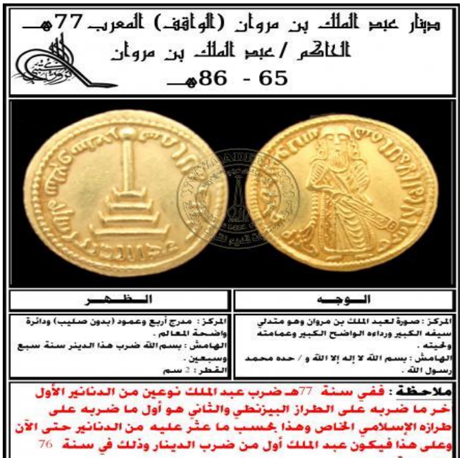
الحاضرة رقم 2
النقود المتداولة قبل الإسلام والعمل قبل الإسلام
حدث تطور في النقود الإسلامية
النقود اليمانيه => لتسهيل العمله
النقود البيزنطية => كان يصنع الملك وأولاده كانت عليها صورة الملك وأولاده
منذ بداية عصر الخليفة عمر بن الخطاب حتى معاويه عمل معاوية نقد ووضع عليه صورته وكان من غير المحبب وضع الصور على النقود قبل عهد عبدالملك بن مروان الذي قام بتعريب السكة سنة 77 هـ
* كان لا يعم في دواوين الحكومة إلا من كان على علم باللغة العربية
-- تعريب العملة أو السكة :
* في بادئ الأمر تعامل المسلمين النقود الفضية التي هي الدراهم *كانت النقود الذهبية عبارة عن دنانير ذهبية مكتوب عليها لا اله الا الله
- الخط العربي ينقسم إلى نوعين
1- خط عربي جاف :- وهو الخط الكوفي الذي كان بسيطا بدون نقط او تشكيل .
2 - الخط اللين :- وهو خط النسخ :وخط النسخ هو الخط الرئيسي من الخط اللين .
تعريب السكة :
التعريب : يعني إحلال اللغة العربية في العملة وخلوها من نقوش أخرى مثل الصلبان ونقوش الامبراطوريه البيزنطية والساسانية وكتبت بالخط الكوفي البسيط * واشتملت النقود الإسلامية المعربة على كتابات أساسية مثل مكان الضرب ، تاريخ الضرب
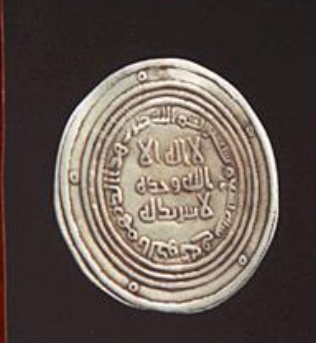
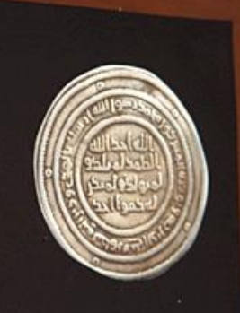
درهم اموي - سنة 79 هـ - ضرب :الكوفة
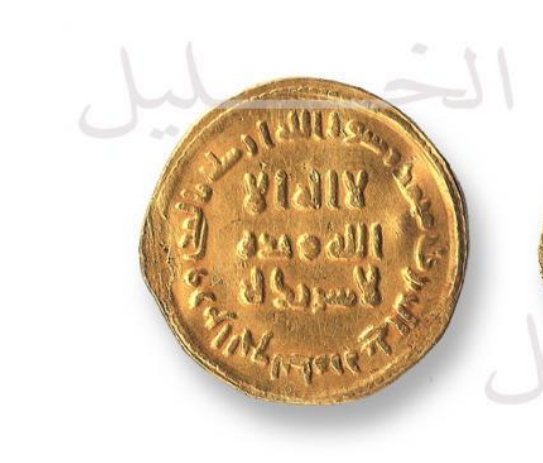
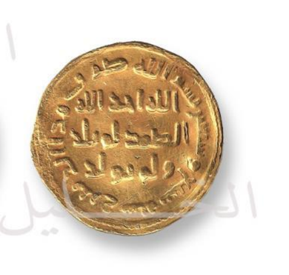
مثال دينار اموي في عصر الملك عبد الملك سنة 77 هـ
| / | الوجه | الظهر |
| المركز |
لا اله الا الله وحده لا شريك له |
الله أحد الله الصمد لم يلد ولم يولد |
| الهامش |
محمد رسول الله أرسله بالهدى ودين الحق ليظهره على الدين كله |
بسم الله ضرب هذا الدينر سنة سبعين وسبع |
لا يوجد اسم للحاكم أو مكان الضرب ونلاحظ تبديل الهامش بين الظهر والوجه في الدرهم بالنسبة للدينار |
||
التصميم العام للعملة عبارة عن مركز وهامش في كل من الوجه والظهر مكتوب بالخط الكوفي
وبالتالي فقد تم هناك الخلط بين كتابات هامش الوجه وهامش الظهر فيما يتعلق بالدينار والدرهم كان هناك تباين وبالتالي فقد اصبح الدرهم الاسلامي المعرب علي هذا النحو لا اله الا الله وحده لا شريك في 3 سطور افقية وفي الهامش البسملة ثم مكان الضرب وتاريخ الضرب في هامش الوجه
* وفي الظهر الصمدية الله أحد الله الصمد لم يلد ولم يولد ولم يكن له كفوا احد في 4 اسطر افقيه متوازية وفي الهامش الخاص بالظهر الرسالة المحمدية أرسل بالهدى ودين الحق ليظهره على الدين كله ثم يستكمل ولو كره المشركون
-->* وهنا لابد لنا من عقد مقارنة بين التطور الذي طرأ في كل من الدينار والدرهم :
اولا الدرهم الإسلامي المعرب
| المقارنة | الدرهم | الدينار |
| الوزن | الدرهم أقل وزن من الدينار فكان 2.97 من الجيران | كان الدينار أثقل من الدرهم حيث أن وزنه كان 4.25 من الجيران |
| المساحة | كانت مساحته اكبر من الدينار وساعد كبر مساحته علي تدوين المزيد من الكتابات حيث تم استكمال الصمدية وكتابات في مركز الظهر في 4 اسطر واحيانا نجد سطر خامس (ثم استكملت الرسالة (المحمدية ولو كره الكافرون | كانت مساحته أصغر من الدرهم وكان يحتوي على الصمدية الله أحد الله الصمد لم يلد ولم يولد وهامش الرسالة المحمدية (أرسل بالهدى ودين الحق ليظهره على الدين كله ) |
| المضرب | تميز في هي وجود اسم دار الضرب فندز استخدام مدينه الضرب على الدرهم منذ بداية تعريبه .فقط سجلت مدن الضرب وكذلك تاريخ الضرب بالحروف لا بالارقام علي نحو ما هو معتاد في استخدام التاريخ الهجري مثل بسم الله ضرب هذا الدرهم بدمشق سنة سبع وسبعين ... | علي عكس الدينار الإسلامي المعرب فلم نجد مدنا للضرب باستثناء معدن الحجاز المؤرخ بعام 105 هـ فكان ذلك هو الاستثناء الوحيد في تاريخ الضرب على الدينار ، |
| ملاحظة | نجد هنا تباين واضح في زيادة الكتابات والنقوش التي وردت على الدرهم الإسلامي المعرب وفي المقابل نجد أن الدرهم سار علي نفس نهج الدينار حيث نقش صوره لعبدالملك بن مروان يقابلها في الوجه الاخر صورة لكسرى أو العكس كمرحلة أولى . | |
تباينت تواريخ الضرب لكن اتفقت جميعها في مكان الضرب في العاصمة دمشق فمعظم غاليه هذه النقود تم ضربها في عاصمة الخلافة أو دار الخلافة دمشق إلى جانب مدن الضرب الإقليمية الرئيسية في الأمصار التابعة للخلافة الاموية .
س: اذكر أوجه التشابه والاختلاف بين الدينار والدرهم؟
الحاضرة رقم 3
المسكوكات العباسيه
- بانتهاء فترة مهمة من تاريخ الدولة الإسلامية هو تاريخ الدوله الامويه التي انتهت عام 132 هـ حل محلها الدولة العباسية التي استمرت قرابة الـ 6 قرون تميزت الدولة العباسية امتداد فترات حكمها بتقسيمها إلى فترات تاريخية مختلفة بين مراحل الازدهار او مرحلة الخمود والفساد قم مراحل القوة مراحل الضعف المختلفة على فترات متباينة وتميزت الفترة العباسية بازدهار النقود في الأمصار أو البلاد التي خضعت لسلطان الدولة العباسية وأصبحت الخلافة العباسية مترامية الاطراف تم سك النقود في العديد من المدن المختلفة في تلك البلاد وتلك الأمصار وظلت بغداد عاصمة الخلافة التي اتخذت مقرا للخليفة العباسي . هي المدير الرئيسي في مدن الضرب في إنتاج النقود الاسلاميه ، الي ورا مدن الضرب الخيري في سائر أنحاء البلاد الخاضعة للخلافة العباسية فنجد ان النقود العباسية اتخذت شكلا واضحا وريخا بني على أساس الفترة السابقة في نقد الدولة الاموية بحيث أصبح الدينار العباسي شكلا مميزا ومستقلا يمكن تميزه في كل فترة بملامح وسمات متنوعه ويمكن توضيح ذلك بسياق النماذج التي نعرض لها من القاهره العباسيه.
مثلا بالنسبه للفتره المباراة من الخلافة العباسية فقد اشتمل الدينار العباسي علي كتابات مركزية وأخرى هامشيه في كل من الوجه والظهر. * فنجد ان الوجه اشتمل على مركز هامش والظهر اشتمل على مركز وهامش.
* اشتم الوجه في الدينار على شهادة التوحيد لا اله الا الله وحده لا شريك في 3 أسطر أفقية وفي الهامش الرسالة المحمدية محمد رسول الله أرسله بالهدى ودين الحق ليظهره على الدين كله ثم يستكمل ولو كره المشركون
* وفي الظهر الصمدية الله أحد الله الصمد لم يلد ولم يولد ولم يكن له كفوا احد في 4 اسطر افقيه متوازية وفي الهامش الخاص بالظهر البسملة ثم مكان الضرب وتاريخ الضرب في هامش الظهر. * وسار الدرهم علي نفس السياق مع تبديل الهوامش مع الظهر والوجه
س - تحدث عن سمات النقد أو الدينار الإسلامي المعرب؟
التصميم ، النصوص ، تحليل الكتابات، الوزن الشرعي للدينار . وزن الدينار هو 4.25 جرام الدينار : لفظ يطلق علي المعدن المصنوع من الذهب فقط * الفرق بين الدينار والدرهم المعرب في الهوامش والشكل والكتابات الدرهم يحتوي على مدينة الضرب ولا يوجد اسم الخليفة . تبادل الهامش مع الدينار مع ثبت المركز مع تكميل الهوامش والكتابات
تكميل الهوامش بسبب :
1 كبر قطره نسبه إلى الدينار 2 الوزن اقل 2,97 جرام
* الدرهم في عصر عمر بن الخطاب كان يحتوي على كسرى بالتاج في الوجه والظهر يحتوي على معبد النار ، الحمد لله ، وربي الله
* ملحوظه : كان أول من لقب بأمير المؤمنين هو عمر بن الخطاب
أمير المؤمنين : هو لقب خلفاء الدولة الدولة الأموية نسبه إلى بني أمية
* الدرهم الاسلامي المعرب في الدولة الأموية سنة 79 هـ :
درهم اموي سنة 79 هـ ضرب الكوفة
الهامش: الرسالة المحمدية محمد رسول الله أرسله بالهدى ودين الحق ليظهره على الدين كله ثم يستكمل ولو كره المشركون
المركز : الصمدية الله أحد الله الصمد لم يلد ولم يولد ولم يكن له كفوا احد في 4 اسطر افقيه
س : تحدث عن تطور الدينار الإسلامي المعرب ؟
1 إضافة بعض الكلمات العربية التي كانت خالية من النقط والتشكيل والشكل العجمي. * الدينار الإسلامي المعرب تعريبا كاملا . الدينار العباسي في مرحلته الأولى هو الدينار الأموي مع اختلاف مع استبدال الصمدية ب محمد رسول الله فيصبح دينار عباسي .
نهايه المرحله الاولي
المرحله الثانيه
وفي عهد أبو محمد موسي 159-170 بدأت ظاهره إثبات اسم الوالي اسفل كتابات مركز الظهر ، مثل اسم "علي" وهو علي بن سليمان بن علي العباسي والي مصر بين سنتي 169 و 170 هـ . وبذلك أصبح الوالي إشارة لمكان ضرب النقود بولايته ضمنيا .
وفي عهد هارون الرشيد 170 - 193 بدأ ظهور اسم الخليفة "هارون الرشيد " ولقبه اسف كتابات الظهر
| / | الوجه | الظهر |
| المركز |
لا اله الا الله وحده لا شريك له |
مما أمر به عبد الله هارون أمير المؤمنين |
| الهامش |
محمد رسول الله أرسله بالهدى ودين الحق ليظهره على الدين كله |
بسم الله ضرب هذا الدينر سنة سبعين ومائة |
| / | الوجه | الظهر |
| المركز |
لا اله الا الله وحده لا شريك له |
محمد رسول الله |
| الهامش داخلي |
محمد رسول الله أرسله بالهدي ودين الحق ليظهره على الدين كله |
مما أمر به محمد بن أمير المؤمنين |
| الهامش خارجي |
... |
بسم الله ضرب هذا الدينار سنة احدى وثمانين ومائة |
ويفهم من الهامش الداخلي إن هذا الدينار ضرب بمدينة السلامي واس ولي عهد هارون الرشيد الأمين
| / | الوجه | الظهر |
| المركز |
لا اله الا الله وحده لا شريك له |
ربي الله محمد رسول الله |
| الهامش |
محمد رسول الله أرسله بالهدى ودين الحق ليظهره على الدين كله |
بسم الله ضرب هذا الدينار سنة أربع وتسعين ومائة |
نقود المأمون
ظهرت أسماء دور الضرب على الدنانير سواء في العراق أو مصر ويتثني من ذلك ورود اسم دار الضرب علي الدنانير دينار فريد ضرب الحجاز سنه 105 هـ من العصر الأموي وكذلك تسجيل اسم دار الضرب علي دينار افريقية عام 103 هـ ظهرت في عهد المأمون سنة 206 هـ طراز آخر الدينار العباسي يشتمل الوجه فيه على مركز وهامش والظهر علي مركز وهامش .
| / | الوجه | الظهر |
| المركز |
لا اله الا الله وحده لا شريك له |
محمد رسول الله |
| الهامش الداخلي |
بسم الله ضرب هذا الدينر سنة ست ومائتين |
محمد رسول الله أرسله بالهدي ودين الحق ليظهره على الدين كله |
| الهامش خارجي |
لله الامر من قبل ومن بعد ويومئذ يفرح المؤمنون بنصر الله |
... |
وفي بعض النماذج ورد اسم المأمون اسفل كتابات الظهر
وفي عهد المعتصم بالله 218 - 227 وضع حدا لظهور أسماء الولاة وعمال الخراج على الدنانير وأصبح يرد غاليا اسم دار الضرب
مثل الدينار السابق مع وجود المعتصم بالله اسفل مركز الظهر وتاريخ الضرب علي الوجه 219
وفي عهد أبو الفضل جعفر المتوكل على الله 232- 24 هـ صارت القود علي النمط السابق مع اضافة اسم ولي العهد اسفل كتابات مركز الظهر واستمر الأمر في عهد المستعين بالله 248 - 251 هـ علي نفس النمط ومن أمثلة النقود الذهبية في تلك الفترة دينار ضرب أرمينية سنة 243 هـ باسم التوكل على الله :
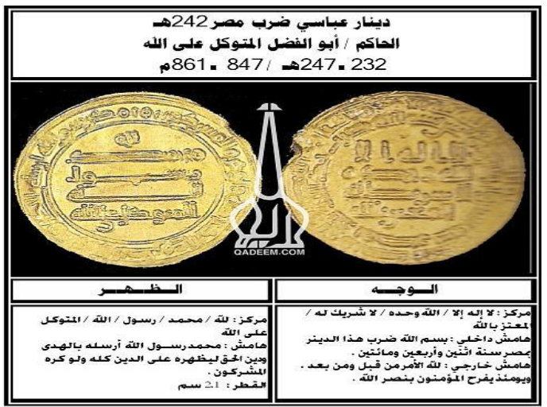
المحاضرة رقم 4
المسكوكات في العصر الطولوني ، والإخشيدي ، الفاطمي اولا الدوله الطولونيه 254 حتي 292 هـ بدأت الدولة الطولونية 254 واستمرت 38 عام
*شعارات الولاء للخلفاء أو الخليفة :
من المفروض أن شعارات الدولة 3 شعارات .
1 - الخراج إرسال جوء من الخراج
2 - نقش اسم الخليفة علي السكه او العمله .
3 - إرسال الدعاء على المنابر للخليفة .
* كان العباسيون يعينون ولاة حتي اتي أحمد بن طولون في البداية تولي حكم جزء مصر نيابة عن زوج امه
ثم
تولى نيابة عن حماه باكباك قم عين واليا على مصر
* الخليفة عينه واليا على مصر رسميا .
حافظ أحمد بن طولون شعارات الملك الثلاثة 3 كتب اسم الخليفة على العملة تبعية
اسمه ثم يدير شئون
الدولة أطلق عليه استقلال فعلي مع الحفاظ علي علي الولاء الفعلي وأسس شئ جديد هو مبدأ الوراثة في الحكم
,
وعمل اسره من الولاة اتسمت باسم الامره الطولونية => وحدث المثل في الدولة الإخشيدية . * ووسع أحمد بن طولون مصر وضم لها ولايات في الشام دمشق ، حمص ، فلسطين وأسس الدولة الطولونية .
س : ما التغيرات أو التطورات التي طرأت على السكة العباسية في الدولة الطولونية ؟
* الدينار الطولوني هو دينار عباسي بكل تفاصيله في مرحلته الثانية مرحلة المأمون مضاف
إليها اسم
الوالي الطولوني ,
المركز مكون من 5 أسطر أفقية متوازية أحمد بن طولون بعدها كتابات المركز بعدها اسم
الخليفة مثال
المعتمد على الله .
نمط العملة في العصر الطولوني والإخشيدي
* النقود الطولونية كانت أغلبها من الذهب وكانت تتميز بالعيار العالي جدا ثم الوزن مستكفي تام وكامل
من
الوزن الشرعي للدينار وهذا يدل على ثراء الدولة الطولونية
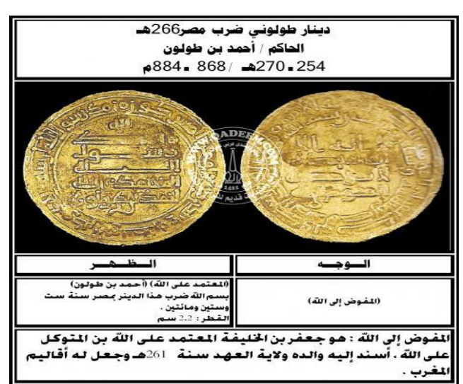
* ثم إن أحمد بن طولون بدا يبحث بنفسه عن الكنوز او الركائز وتمكن من بناء مسجد احمد بن طولون من الأجر الطوب الاحمر فور عثوره عليه .
* تزوجت قطر الندى بنت خمارويه بن أحمد بن طولون من الخليفة العباسي.
* في رهبة أحمد بن طولون بناء الجامع تميزت العملة الطولونية والإخشيدية بوجود بعض الحروف مثل
ت، ع، ك، و، خ، ج
اي تام ، عالٍ، كافٍ، وافٍ، خير، جايز
وهي حروف ربما ايضا تشير على حروف العاملين بدار الضرب ثم من ناحية التصميم العام صارت للنقود الإخشيدية والطولونية .
دينار ضرب بفلسطين عام 333 وفي فترة حكم أبو بكر محمد الإخشيدي
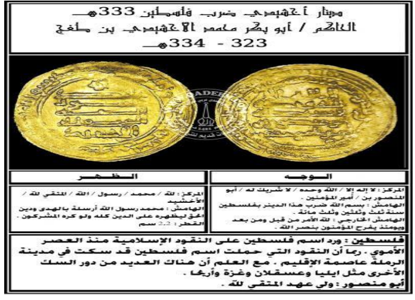
انتهت الدولة الطولونية 292 هـ .
انتهت الدولة الطولونية عام 292 هـ مع البقاء علي الولاء الاسمي للخلافه والشعارات ،
إرسال الدعاء على المنابر للخليفة
2 إبقاء اسم الخليفة على العملة.
ثم حصل أحمد بن طولون امتيازين :-
الأول " أن تكون الولاية وراثية في دولته
الثاني : الحصول على إذن من الخليفة بتدوين اسم الخليفة على النقود في مصر والشام جنبا مع اسم
الوالي
.
الدولة الإخشيدية
عين محمد بن طغج واليا على مصر للمرة الثانية بعد ان لبث شهر في الحكم ثم خلع واليا على مصر عام 323 هـ وخلع عليه الخليفه الراضي لقب الاخشيد سنه 327 وبذلك تكون النقود قبل خلع اللقب عليه خاليه من كلمه اخشيد وتتبع النمط العباسي ثم تطور الأمر بتسجيل اسم الخليفة اسفل كتابات الظهر مع اسم الولي اسفل كتابات الوجه في سطرين ضربت السكة في الفسطاط بمصر والرمه بفلسطين أو دمشق بسوريا واستمر تأثير وضع الرموز مثل الدوله الطولونية
| والعيار | ارتفع العيار للدينار الإخشيدي ووصل إلى 23.5 قيراط للعيار القيراطي و 0.979 للعيار الالفي |
| الوزن | ووزنه 3,72 وبذلك قل الوزن عن الوزن الشرعي للدينار وذلك بالنسبة للنقود الإخشيد بينما يقارب الوزن الشرعي أو يزيد في عهد خلفائه . |
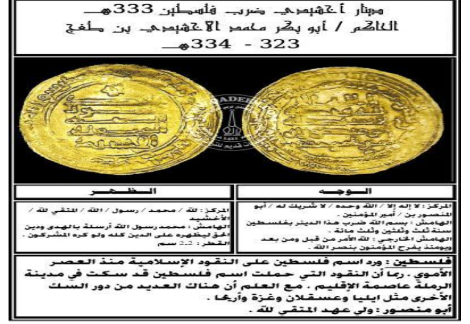
هناك نماذج من النقود التي ضربت بفلسطين عام 328 و 331 و 332
النموذج الأول ضرب بفلسطين ويتميز بتعدد رموز الوجه
اما الثاني فقد ورد اسم أبي القاسم بن الإخشيد في سطرين أسفل الوجه بدلا من ولي العهد كما الشامل
الظهر
علي استكمال عبارة صلى الله عليه وعلى آله
وظهر علي نقوده حرف ال ك نسيا إلى الإخشيد وسارت نقود أبو الحسن علي بن الإخشيد على نفس
السياق كما
كتب اسفل اسمه حرف ال ك .
== كافور الإخشيدي 355 - 257
كان كافور الإخشيد موضع ثقة سيدة الإخشيد وجعله وصيا على أبنائه أنوجور ثم علي وعند وفاة علي ابرز كافور كتابا من الخليفة العباسي المطيع لله سماه فيه وليا. ولكنه اكتفي بتلقيب نفسه بالاستاز . وذكر اسمه على النقود نادر جدا واكتفي بوضع حرف ال و كما في عهد أبناء الإخشيد . وأبرز ما وصلنا من نقوده فلس نحاسي يحمل اسمه من عهد أبو الحسن علي بن الإخشيد :
أبو الفوارس أحمد بن علي بن الإخشيد 357 - 358 هـ
سارت نقوه على نفس طراز القاسم باستثناء وضع اسم الحسن بن عبدالله والي الشام الذي استبدل بمصر كوصي علي " أحمد بن علي بن الإخشيد " بعد وفاة كافور في سطرين وعلي الظهر اسم الخليفة المطيع بالله ثم يليه اسم أحمد بن علي .
نقود الثورة 128 - 132 هـ
اقدمها درهم جي قبل أن يتولي مسلم الخراساني سنة 128 وتميز هذا الدرهم بنقش الآية إلى قوله تعالى ومن يقترف حسنة نزد له فيها حسناَ
كما سجلت الآية على نقود عبدالله بن معاويه 127 - 129 بن عبدالله بن جعفر بن أبي طالب
بعض من الايات القرآنيه على مسكوكات الخارجين على الخلافة الأموية صــــ 55
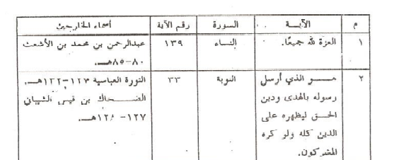
بعض من الآيات القرآنية على المسكوكات العباسيه : صــــــ 56
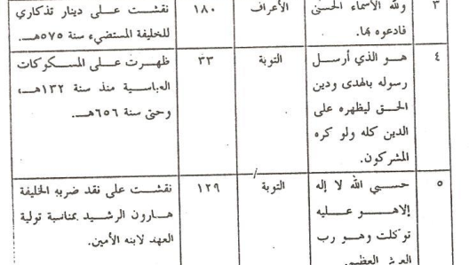
المسكوكات الفاطميه :
1 المسكوكات الذهبية
نماذج لدنانير المعز لدين الله 341 - 365 هــ
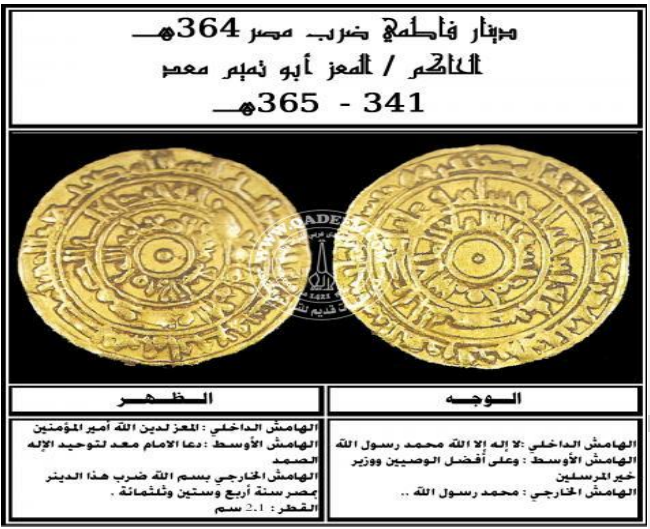
وقد تعددت دور ضرب النقود الذهبية في عهد الخليفة المعز لدين الله وضربت في المهدية المنصورية مصر وغيرها . وانفرد النموذج الرابع بورود اسم الذي ضرب فيه العمل قبل تاريخ الضرب وهو يعد أمرا فريدا في النفوذ الفاطمي .
العزيز بالله 365 - 386 هـ
وقد خلت كتبات مركز الظهر علي اسم ولي عهد الحاكم بأمر الله واشتملت كتبات الهامش الخارجي للوجع علي الآية 54 من سورة النساء والتي وردت على نقود المهدي عام 387 هـ لاول مره بعد القضاء علي برجوان الصقلي علي "ابن عمار " ثم أنها تشير إلى الإمامة في آل البيت . بينما وردت الآية 15 من سورة الأنعام ضمن كتابات الهامش الخارجي للظهر وهي نفس الكتابة التي قام الخليفة الفاطمي القائم بأمر الله ثاني خلفاء الفاطمين بنقشها علي سكته 322 - 334 هـ بعد ان كتم وفاة الخليفه الفاطمي بعد الله المهدي لمدة عام حتي يقوم بقمع ثورة طالوت القرشي التي اندلعت ضده في طرابلس
* واستمرت النفود الذهبيه تتكون إما من كتابات مركزية وهامشية بالوجه والظهر ، والهامشية مكونه من هامش واخد كما بنقود الظاهر لإعزاز دين الله 4111 - 427 هـ والمستنصر بالله 427 - 487 هـ وباقي نماذج نقود الخلفاء الفاطميين . * أو مكونه من هامشين كما بنقود الظاهر لإعزاز دين الله ، والمستنصر بالله وبقية الخلفاء الفاطميين . او تتكون كتابات وجه والظهر من ثلاثة هوامش بالوجه والظهر كما بنقود الظاهر لإعزاز دين الله والمستنصر والمستعلي حتى نماز بقية الخلفاء الفاطميين .
وتشتمل كتابات نقود الظاهر على لا اله الا الله وحده لا شريك له محمد رسول الله ولي الله " سواء في مركز وهامش أو هامشين أحدهما داخلي والآخر أوسط يحيط به الهامش الثالث الذي يشتمل على الرسالة المحمدية محمد رسول الله ارسل بالهدي ودين الحق ليظهره على الدين كله ولو كره المشركون وتشتمل كتابات الظهر بالمركز علي اسم الاخيره وباقي القابه او موزعه على مركز وهامش داخلي يحيط بها البسملة ومكان وتاريخ الضرب في هامش خارجي . وقد يستدل الاقتباس بالوجه ليكون بالظهر ويتبدل البسملة مكان وتاريخ الضرب من الظهر لتكون بالوجه ضمن نماذج بعض النقود .
نقود المستنصر بالله
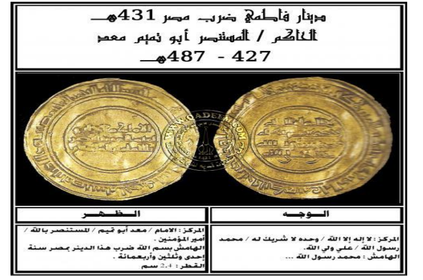
نقود المستعلي والأمر بالحكم الحافظ لدين الله والظافر بالله والفائز والعاضد تميزت بمركز وهامش او مركز وهامشين عن باقي الخلفاء الفاطميين
| في حاله مركز وهامش فقط |
رسالة التوحيد لا اله الا الله وحده لا شريك له محمد رسول الله علي ولي الله في المركز و الرسالة المحمدية في هامش الوجه وفي الظهر اسم الخليفة وألقابه في المركز مع اضافه كلمه عالي أو غاية اسفله و البسملة ومكان الضرب والتاريخ كما في نقود الظافر والمستعلي |
| اما في حاله مركز وهامشين |
ويشتمل المركز على كلمتي عال أو غايه والهامش الداخلي لا اله الا الله محمد رسول الله علي ولي الله والهامش الخارجي الرسالة المحمدية محمد رسول الله أرسله بالهدى ودين الحق ليظهره على الدين كله وفي الظهر يشتمل المركز على اسم الخليفة وألقابه هامش داخلي يحيط به هامش خارجي فيه البسمه وتاريخ ومكان الضرب |
نقود الخليفه العاضد 555 - 567 هـ
main